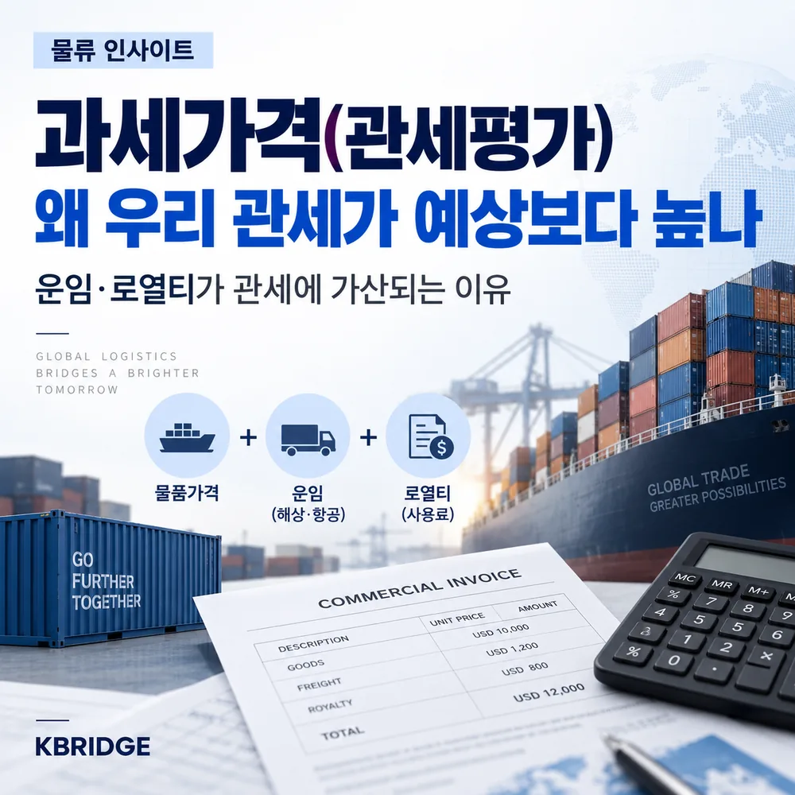
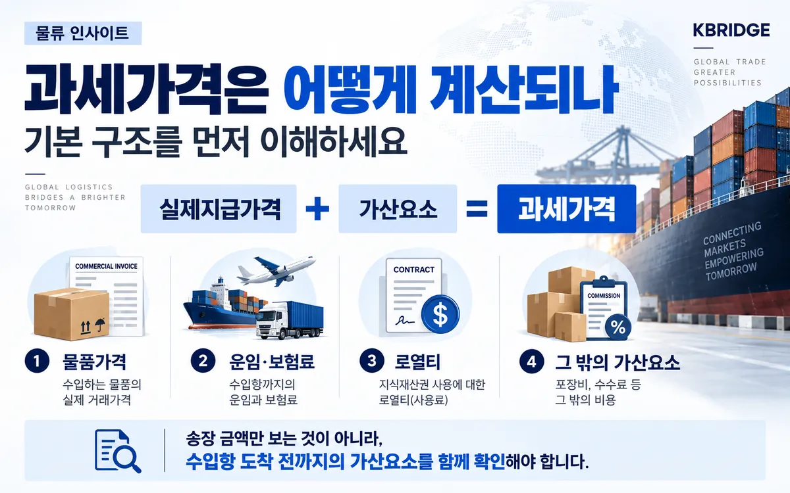
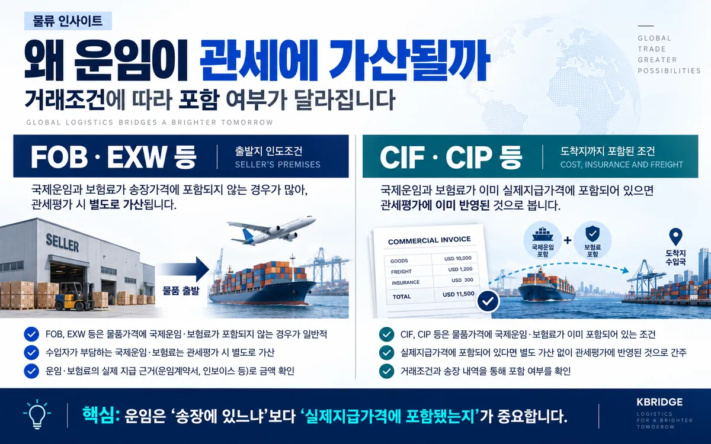
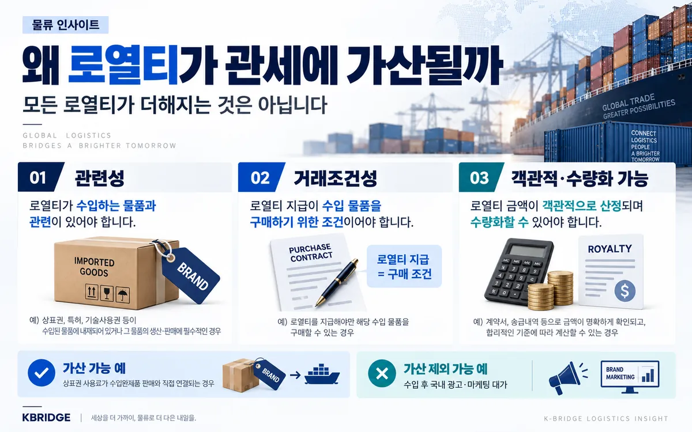
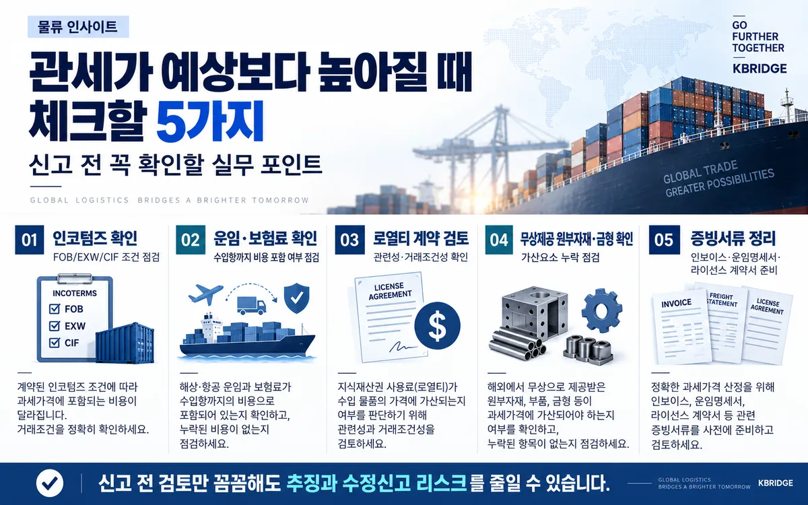

먼저 결론부터
과세가격은 단순한 송장 금액이 아닙니다. 관세법상 거래가격을 적용할 때에는 구매자가 실제로 지급했거나 지급해야 할 가격에 법에서 정한 가산요소를 더합니다. 그래서 FOB·EXW 조건에서 별도 지급한 국제운임·보험료나, 요건을 충족하는 상표권·특허권·기술사용료 등 로열티가 포함되면 예상한 것보다 과세가격과 세액이 커질 수 있습니다.
1. 왜 우리 관세가 예상보다 높게 나올까요?
수입 견적을 볼 때는 보통 Commercial Invoice의 물품가격을 먼저 확인합니다. 하지만 통관에서는 송장금액만으로 과세가격을 확정하지 않습니다. 2026년 8월 11일 시행 관세법 제30조는 수입물품의 과세가격을 실제지급가격에 법정 가산요소를 더해 조정한 거래가격으로 정하고 있습니다.
따라서 물품가격 외에 수입항까지의 국제운임·보험료, 권리사용료, 포장비, 수수료·중개료, 무상 제공 원부자재나 금형 등이 존재하면 과세가격이 커질 수 있습니다. 과세가격이 커지면 관세뿐 아니라 수입부가세 등 후속 세액에도 영향을 줄 수 있어 견적 단계와 실제 납부세액 사이의 차이가 더 크게 느껴집니다.
- FOB·EXW 조건인데 국제운임과 보험료를 별도로 지급한 경우
- 상표권·특허권·기술사용료 등 로열티를 별도 계약으로 지급하는 경우
- 해외 본사·공급자가 원재료·부품·금형·설계를 무상 또는 할인 제공한 경우
- 포장비·수수료·중개료 등 계약 외 비용을 송장금액에서 놓친 경우
2. 과세가격의 기본 구조를 먼저 이해하세요
과세가격 = 실제지급가격 + 가산요소라는 구조를 이해하면 대부분의 관세평가 이슈가 정리됩니다. 실제지급가격은 수입물품에 대해 구매자가 판매자에게 직접 또는 간접으로 지급했거나 지급해야 할 금액을 중심으로 보고, 여기에 관세법 제30조가 정한 가산요소를 객관적이고 수량화할 수 있는 자료에 따라 반영합니다.

| 구분 | 주요 내용 | 실무 확인사항 |
|---|---|---|
| 실제지급가격 | 수입물품에 대해 실제로 지급했거나 지급해야 할 금액 | 송장, 구매계약, 할인·정산 조건 확인 |
| 운임·보험료 | 수입항까지의 국제운송 관련 비용 | FOB·EXW는 별도 부담 여부, CIF·CIP는 포함 여부 확인 |
| 권리사용료 | 상표권·특허권·기술사용권 등 일정한 로열티 | 수입물품과의 관련성, 거래조건성, 산정근거 확인 |
| 기타 가산요소 | 포장비, 수수료·중개료, 무상 제공 원부자재·금형·설계 등 | 인보이스 밖에서 발생한 계약·본사 제공 내역 점검 |
3. 운임·보험료는 언제 과세가격에 가산될까요?
운임은 거래조건에 따라 가장 자주 차이가 발생하는 항목입니다. FOB·EXW처럼 국제운임과 보험료가 물품가격에 포함되지 않은 경우에는 수입자가 별도로 부담한 수입항까지의 운임·보험료를 가산 검토합니다. 반대로 CIF·CIP처럼 해당 비용이 실제지급가격에 이미 포함되어 있다면 같은 금액을 다시 더하지 않도록 확인해야 합니다.

| 거래조건 예시 | 일반적 가격 구조 | 관세평가 체크 |
|---|---|---|
| FOB / EXW | 국제운임·보험료가 물품가격과 분리되는 경우가 많음 | 수입자가 별도로 부담한 수입항까지의 비용 확인 |
| CIF / CIP | 국제운임·보험료가 가격에 포함되는 경우가 많음 | 이미 실제지급가격에 포함됐는지 확인해 중복 가산 방지 |
관세법 시행령 제20조는 운임·보험료를 사업자가 발급한 운임명세서·보험료명세서 또는 이에 갈음하는 서류에 따라 산출하도록 규정합니다. 따라서 포워더 인보이스, 운임명세서, 보험증권·보험료 명세를 신고자료와 함께 정리해 두는 것이 좋습니다.
4. 로열티는 언제 과세가격에 가산될까요?
모든 로열티가 과세가격에 자동으로 가산되는 것은 아닙니다. 일반적으로 수입물품과의 관련성, 로열티 지급이 수입물품 구매의 조건인지 보는 거래조건성, 그리고 가산금액을 객관적으로 산정할 수 있는지를 함께 검토합니다.

예를 들어 수입 완제품에 사용되는 상표권의 사용료가 해당 제품의 구매와 직접 연결되고, 라이선스 계약상 그 사용료를 지급해야만 해당 물품을 구매할 수 있는 구조라면 과세가격 가산 검토 대상이 될 수 있습니다. 반면 수입 후 국내 광고·마케팅 활동에 대한 대가처럼 수입물품 구매와 별개인 비용은 성격을 구분해 판단해야 합니다.
| 검토 기준 | 확인 내용 | 주요 자료 |
|---|---|---|
| 관련성 | 로열티가 수입물품 자체, 브랜드, 특허·기술과 연결되는지 | License Agreement, 제품사양, 상표·특허 사용범위 |
| 거래조건성 | 로열티를 지급해야 수입물품을 구매할 수 있는 구조인지 | Purchase Contract, Distribution Agreement, 공급조건 |
| 금액 산정 | 가산할 금액을 객관적으로 수량화할 수 있는지 | 매출·수량 정산표, 로열티 계산식, 지급내역 |
5. 운임·로열티만이 전부는 아닙니다
관세평가 실무에서는 운임과 로열티 외에도 놓치기 쉬운 가산요소가 있습니다. 대표적으로 구매수수료를 제외한 수수료·중개료, 포장비와 용기 비용, 무상 또는 인하된 가격으로 제공된 원부자재·부품·금형·공구·설계 등이 있습니다.
특히 해외 본사에서 금형이나 원재료를 무상 제공하고 해외 공장이 이를 사용해 수입물품을 생산하는 구조는 “직접 지급한 금액이 없다”는 이유로 누락되기 쉽습니다. 하지만 관세평가에서는 해당 제공물이 수입물품의 생산·수출거래와 관련된 가산요소인지 검토해야 합니다.
- 수수료·중개료가 구매수수료에 해당하는지 구분
- 용기·포장재·포장노무비를 누가 부담했는지 확인
- 원부자재·부품·금형·공구의 무상·할인 제공 여부 확인
- 설계·개발·디자인이 해외에서 제공되었는지 확인
6. 관세가 예상보다 높아지기 전에 체크할 5가지
수입신고 전에는 복잡한 법조문을 모두 외우기보다, 실제 거래서류를 기준으로 아래 순서대로 점검하는 것이 효율적입니다.

- 인코텀즈 확인 · FOB·EXW·CIF·CIP 등 거래조건을 계약서와 인보이스에서 일치시킵니다.
- 운임·보험료 확인 · 실제지급가격에 포함됐는지, 별도 청구인지 확인합니다.
- 로열티 계약 검토 · 관련성·거래조건성·산정근거를 구매계약과 함께 확인합니다.
- 무상 제공 내역 확인 · 원재료, 부품, 금형, 공구, 설계·개발 자료의 제공 여부를 확인합니다.
- 증빙서류 정리 · Invoice, Freight Statement, Insurance Statement, License Agreement, 정산표 등을 신고 전에 준비합니다.
7. 자주 묻는 질문
Q. FOB로 수입하면 운임은 과세가격에 더해지나요?
Q. CIF 조건이면 운임을 다시 더해야 하나요?
Q. 모든 로열티가 과세가격에 가산되나요?
Q. 관세가 예상보다 높게 나왔다면 무엇부터 확인해야 하나요?
수입 원가, 관세율만 보지 말고 과세가격부터 확인하세요
케이브릿지는 수입 화물의 거래조건, 국제운임, 통관 서류 흐름을 함께 살펴 실제 수입원가에 영향을 주는 요소를 정리해 드립니다. 계약구조가 복잡한 로열티·무상 제공 항목은 신고 전 관세사와 함께 검토하는 것이 안전합니다.
참고 자료
· 국가법령정보센터, 관세법 제30조(과세가격 결정의 원칙) — 2026년 8월 11일 시행 기준
· 국가법령정보센터, 관세법 시행령 제19조(권리사용료의 산출), 제20조(운임 등의 결정)
· 관세청, 수입물품 과세가격 결정 관련 자료 및 관세법령정보포털 CLIP
※ 본 글은 2026년 9월 19일 기준 공개 법령과 관세청 자료를 바탕으로 작성한 일반 정보입니다. 실제 과세가격은 품목, 거래관계, 계약조건, 지급구조와 증빙에 따라 달라질 수 있으므로 신고 전 최신 법령과 개별 사실관계를 확인해야 합니다.